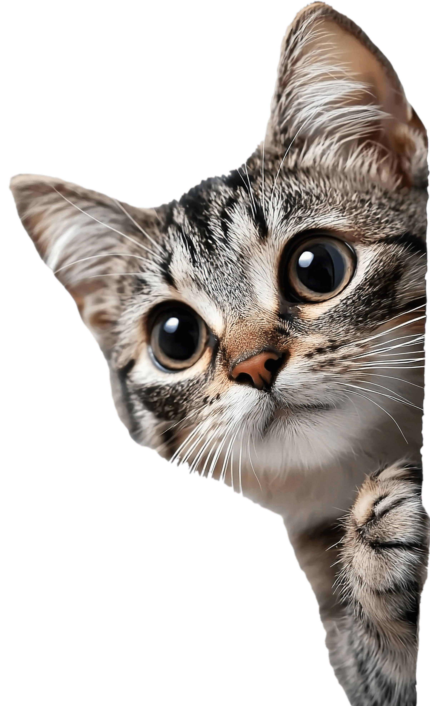

Vamos conversar?

Dúvida sobre adoção, vontade de ajudar ou só curiosidade sobre a MiauDota? A gente responde com carinho e sem pressa.
Escolha o jeito mais facíl para você
Somos uma equipe pequena e voluntária, mas fazemos o possível para responder rápido.
(11) 98765-4321
Nosso canal mais rápido. Respondemos de segunda a sexta, das 9h às 18h.
contato@miaudota.org
Ideal para mensagens mais longas, parcerias e imprensa.
@miaudota.ong
Acompanhe os gatinhos, novidades e as histórias de adoção.
Visita presencial
Rua dos gatinhos, 120, Vila Mariana
Agende antes pelo whatsapp para garantirmos que alguém receba você.
Envie sua mensagem
Quer algo específico?
Separamos os caminhos mais procurados para você chegar mais rápido.
Quero ser voluntário(a)
Ajude em feiras, transporte, redes sociais e no cuidado do abrigo.
Falar sobre voluntarismoQuero ser lar temporário
Abra sua casa por algumas semanas. Fornecemos ração, areia e assistência veterinária.
Saiba maisQuero apadrinhar ou doar
Conheça as formas de apoiar financeiramente a MiauDota e nossos gatinhos.
Como ajudarNossa casa é a sua casa
Estamos na Vila Mariana, em São Paulo, e adoramos receber visitas. Para a sua segurança e a dos gatinhos, as visitas acontecem com agendamento. Assim, alguém da equipe pode te receber com calma e apresentar quem está esperando um lar.
Dados:
- Endereço: Rua dos Gatinhos, 120, Vila Mariana, São Paulo, SP, CEP 04000-000
- Visitas (com agendamento): terça a sexta, das 14h às 18h; sábados, das 10h às 16h
- Atendimento por WhatsApp e e-mail: segunda a sexta, das 9h às 18h
- Fechado: domingos e feriados
Dicas para a visita:
- Chegue com 10 minutos de antecedência.
- Venha com roupas confortáveis, porque você pode ganhar pelos de presente.
- Lave as mãos antes e depois de mexer nos gatos.
- Leve um documento com foto se a visita for para adotar.
Respostas rápidas
1. Em quanto tempo vocês respondem?
2. Preciso agendar para visitar?
3. Vocês fazem resgate de gatos abandonados?
4. Posso levar um gato que encontrei na rua?
Todo gato começa com uma conversa
Seja para adotar, ajudar ou só dizer um oi, a gente adora ouvir você.
Ver gatos disponíveis